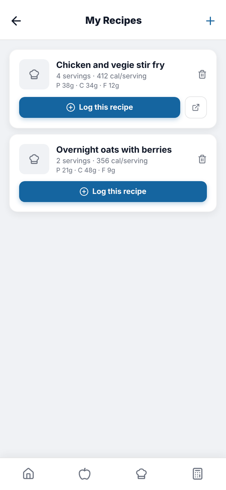
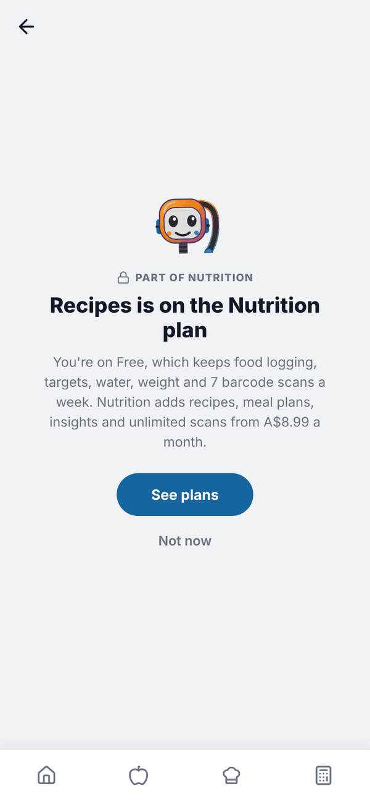
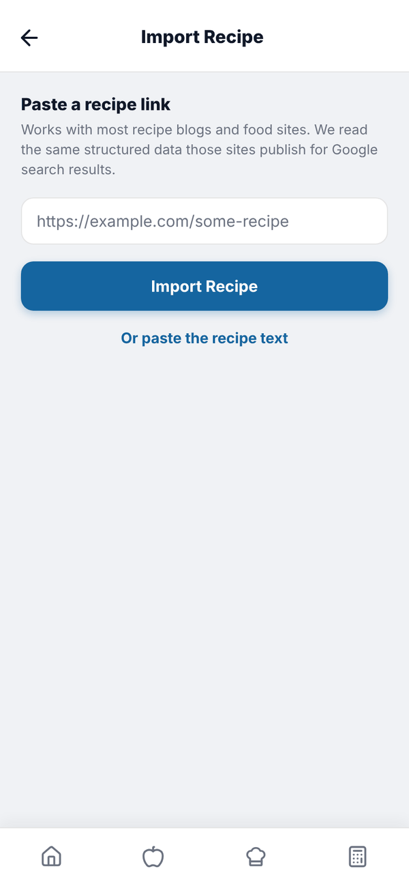
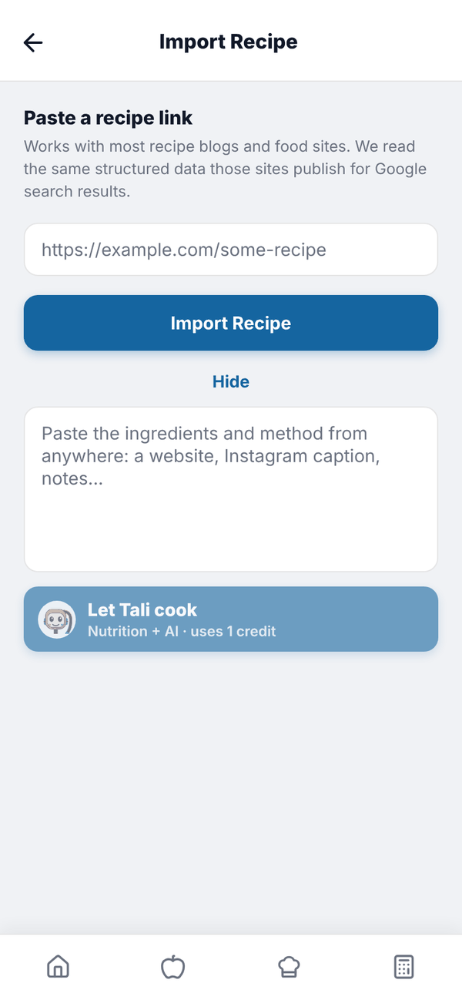

Totality Nutrition guide
Recipes
Import a recipe from a link, or have Tali read pasted text, then log a serving in one tap.
My Recipes holds recipes you've imported. Each one is broken into ingredients, matched to the food database and saved per serving, so logging it adds one serving. Recipes are Trial and Paid. Having Tali read a recipe needs AI credits: Trial or Nutrition + AI Paid. On Free, Recipes shows "Recipes is on the Nutrition plan".


With a few recipes saved, a Search your recipes box sits at the top of My Recipes. For 200 ready made recipes, see the Cookbook.
Import a recipe from a link#
- In your food log, tap Recipes at the bottom. Then tap + (or Import a Recipe if you have none).
- Under Paste a recipe link, paste the web address of the recipe.
- Tap Import Recipe. It reads the recipe data that most recipe sites publish for Google.
- Check the Recipe name and set Servings with the minus and plus buttons.
- Check each ingredient. Each shows Matched, Check match or No match. Tap an ingredient to Find a match and pick the right food. Fix grams if needed, or tap the bin to remove it.
- Per serving shows calories, protein, carbs and fat for one serving.
- Tap Save Recipe.

If any ingredients have no match, you're asked whether to save anyway. Unmatched ingredients log as 0 calories.
When a link doesn't work: let Tali read it#
Some pages don't publish recipe data. Then you'll see Let Tali read it (Nutrition + AI, uses 1 credit). Or tap Or paste the recipe text, paste the ingredients and method from anywhere (a website, an Instagram caption, your notes) and tap Let Tali cook (uses 1 credit). Tali turns it into the same review screen. If Tali can't find a recipe in it, no credit is used.

Log a recipe#
Tap Log this recipe on its card. If you came from a meal it goes straight in, otherwise pick the meal. It logs one serving. The link icon opens the original recipe page, and the bin deletes the recipe.
Questions#
Why did a recipe say some ingredients aren't matched?
The importer couldn't find a close enough food. Tap the ingredient and search for the right one before saving.
Can I log half a serving?
Log it, then tap each food in your food log and halve the serving.
Which sites work?
Most recipe blogs and food sites. For anything else, paste the text and let Tali read it.
Can the Nutrition plan import recipes?
Yes, from links. Having Tali read a page or pasted text needs AI credits, which come with the trial and Nutrition + AI.